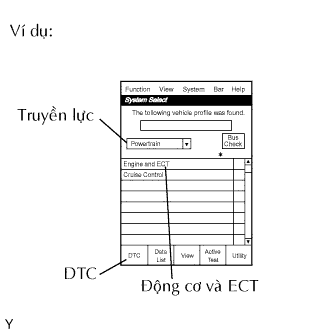
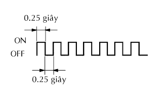
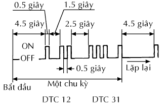

HỆ THỐNG SFI > KIỂM TRA HOẶC XOÁ MÃ DTC |

| KIỂM TRA MÃ DTC (dùng máy chẩn đoán) |
Nối máy chẩn đoán với giắc DLC3.
Bật khóa điện đến vị trí ON và bật máy chẩn đoán ON.
|  |
Vào các menu sau: Powertrain / Engine and ECT / DTC.
Kiểm tra và ghi lại DTC và dữ liệu lưu tức thời.
Xác nhận lại chi tiết của các mã DTC (Xem trang Kích chuột vào đây).
| KIỂM TRA MÃ DTC (không dùng máy chẩn đoán) |
Bật khoá điện ON.
Dùng SST, nối tắt các cực 13 (TC) và 4(CG) của giắc DLC3.
|  |
Đọc DTC bằng cách theo dõi đèn MIL. Nếu không phát hiện được DTC nào, đèn MIL sẽ nháy như trong hình vẽ.
|  |
Ví dụ
DTC 12 và 31 được phát hiện và MIL bắt đầu báo DTC, như được hiển thị trên hình vẽ. Kiểu nháy của đèn MIL cho DTC 12 sẽ được hiển thị trước tiên.
Một quãng thời gian dừng 2.5 giây sẽ xảy ra. Quãng thời gian dừng này sẽ xảy ra giữa mỗi lần đèn MIL báo từng mã DTC.
Kiểu nháy đèn MIL của mã 31 được hiển thị.
Một quãng thời gian dừng 4.5 giây sẽ xảy ra. Quãng thời gian dừng này sẽ xảy ra giữa mỗi lần đèn MIL báo mã DTC cuối cùng trong chuỗi mã lỗi.
Đèn MIL sẽ lặp lại hiển thị chuỗi các mã DTC.
Kiểm tra chi tiết về hư hỏng bằng bảng DTC. (Xem trang Kích chuột vào đây).
Sau khi hoàn tất việc kiểm tra, ngắt các cực 13 (TC) và 4 (CG) và tắt hiển thị.
Xác nhận lại chi tiết của các mã DTC (Xem trang Kích chuột vào đây).
| DỮ LIỆU LƯU TỨC THỜI (dùng máy chẩn đoán) |
Nối máy chẩn đoán với giắc DLC3.
Bật khóa điện đến vị trí ON và bật máy chẩn đoán ON.
Hãy đọc các DTC bằng cách chọn các mục sau: Powertrain / Engine and ECT / DTC.
Hãy chọn các thông số để kiểm tra bằng cách dùng dữ liệu lưu tức thời.
Hãy ghi lại các mã DTC và dữ liệu lưu tức thời.
| XOÁ MÃ DTC VÀ DỮ LIỆU LƯU TỨC THỜI (dùng máy chẩn đoán) |
Nối máy chẩn đoán với giắc DLC3.
Bật khóa điện đến vị trí ON (không khởi động động cơ) và bật máy chẩn đoán ON.
Vào phần sau: Powertrain / Engine and ECT / DTC / Clear.
Xóa các mã DTC và dữ liệu lưu tức thời bằng cách nhấn YES trên máy chẩn đoán.
| XOÁ MÃ DTC VÀ DỮ LIỆU LƯU TỨC THỜI (không dùng máy chẩn đoán) |
Hãy tháo các cầu chì EFI và ETCS từ hộp rơle hay hộp nối khoang động cơ trong thời gian từ 60 giây trở lên, hoặc ngắt cáp ắc quy với thời gian từ 60 trở lên.